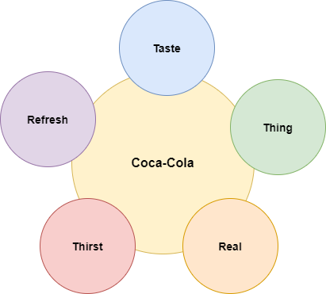
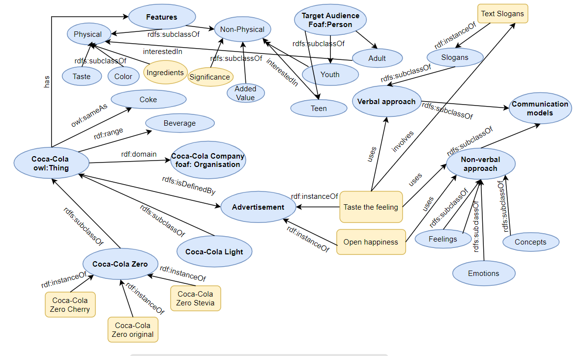

Communication model
Through the years
Slogans for Coca-Cola From 1886 to 2006
- 1886 - Drink Coca-Cola
- 1904 - Delicious and Refreshing
- 1905 - Coca-Cola Revives and Sustains
- 1906 - The Great National Temperance Beverage
- 1917 - Three Million a Day
- 1922 - Thirst Knows No Season
- 1923 - Enjoy Thirst
- 1924 - Refresh Yourself
- 1925 - Six Million a Day
- 1926 - It Had to Be Good to Get Where It Is
- 1927 - Pure as Sunlight
- 1927 - Around the Corner from Everywhere
- 1929 - The Pause that Refreshes
- 1932 - Ice Cold Sunshine
- 1938 - The Best Friend Thirst Ever Had
- 1939 - Thirst Asks Nothing More
- 1939 - Whoever You Are, Whatever You Do, Wherever You May Be, When You Think of Refreshment Think of Ice Cold Coca-Cola
- 1942 - The Only Thing Like Coca-Cola is Coca-Cola Itself
- 1948 - Where There's Coke There's Hospitality
- 1949 - Along the Highway to Anywhere
- 1952 - What You Want is a Coke
- 1956 - Coca-Cola... Makes Good Things Taste Better
- 1957 - Sign of Good Taste
- 1958 - The Cold, Crisp Taste of Coke
- 1959 - Be Really Refreshed
- 1963 - Things Go Better with Coke
- 1969 - It's the Real Thing
- 1971 - I'd Like to Buy the World a Coke (part of the "It's the Real Thing" campaign)
- 1975 - Look Up America
- 1976 - Coke Adds Life
- 1979 - Have a Coke and a Smile
- 1982 - Coke Is It!
- 1985 - We've Got a Taste for You (for both Coca-Cola & Coca-Cola classic)
- 1985 - America's Real Choice (for both Coca-Cola & Coca-Cola classic)
- 1986 - Red, White & You (for Coca-Cola classic)
- 1986 - Catch the Wave (for Coca-Cola)
- 1987 - When Coca-Cola is a Part of Your Life, You Can't Beat the Feeling
- 1988 - You Can't Beat the Feeling
- 1989 - Official Soft Drink of Summer
- 1990 - You Can't Beat the Real Thing
- 1993 - Always Coca-Cola
- 2000 - Coca-Cola. Enjoy
- 2001 - Life Tastes Good
- 2003 - Coca-Cola... Real
- 2005 - Make It Real
- 2006 - The Coke Side of Life
- 2009 – Open happiness
- 2016 – Taste the feeling
On the whole list of slogans has been aplied algorithm for word counting in order to find the most frequent terms that have been used through the years by Coca-Cola. We are interested in the root of the words and because of that endings, plurals have been detached as to remain just the word root.
After the execution, the 5 most frequent words, used through the years for Coca-cola slogans, are related to the following topics:
These 5 most frequent words are related between each other and in many cases through the years have been used in a compatible way trying to create an irrestible image of the beverage that combines not just its characteristics as a refreshing taste, but also about the feelings and emotions that it brings to the consumer.
The various relations between Coca-Cola and the advertisements have been made explicit through the use of RDF graph below:

Verbal and non-verbal approach
In the ad 'Open happiness', the focus is put on the non-verbal communication and the various activities and emotions. While in 'Taste the feeling' the approach combines verbal and non-verbal communication. The scenes are enriched by slogans that emphasize the features of the product and the wide range of daily situations in which we consume it.
In the advertising 'Taste the feeling' we could observe the verbal approach in the slogans appearing throughout the video. In all of them lacks an essential part for the construction of a basic phrase or a sentence - a verb. So that the supposed activity or action is left to be imagined by the public.
The other approach is the non-verbal communication which basically uses different kind of emotions, facial expressions, body signs and gestures in order to implement certain ideas and concepts. In the video, we are able to observe a wide range of different emotions as surprise, happiness, excitement, exhilaration, etc. Apart from that most of the people in it are smiling and are accompanied by others, which implies the idea of sharing something positive.
In both ads we could see also people hugging each other, holding hands or trying to have some physical contact with the other person, which is a sign for sharing some positive feeling, being together doing a certain action, making it in a group. What is essential when extracting information from the scenes is to observe a bit more abstractly and see how they represent a wide variety of our daily routines, situations and scenarious. This makes us prone to believe that the product is for everyone and for any kind of situation
Qualitative descriptive analysis
In the table below you could see a descriptive analysis of 6 scenes, part of the ad 'Taste the feeling', combining verbal and non-verbal communication. The combination of both approaches emphasizes the message that is meant to be sent to the customers. The essential about these scenes is that we have a few things to consider: our association with the text shown through the scene, as well as the meaning of the scene and its relation with the slogan. This provides more options for interpretation. The scenes from the video could be seen below the table.